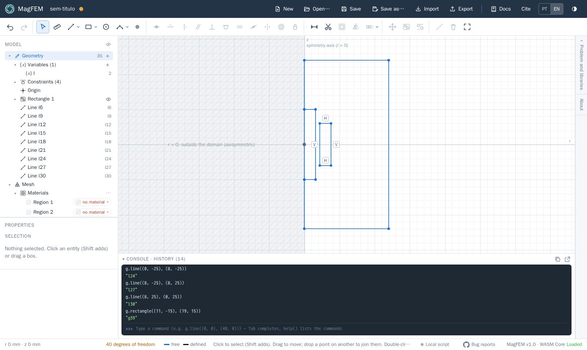
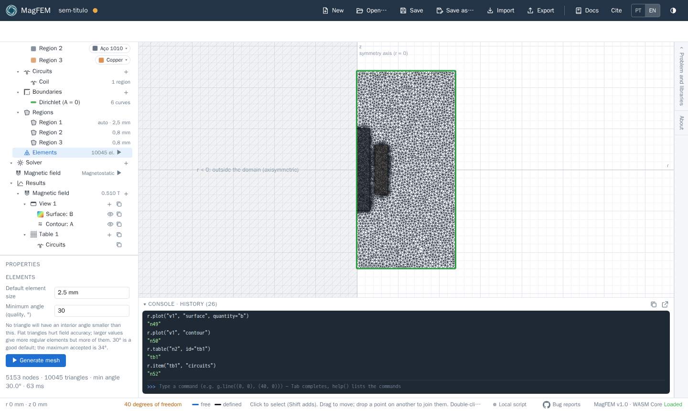

First model: coil with a core
In this tutorial you build, solve and analyze an axisymmetric coil with a steel core, similar to the FEMM magnetostatics tutorial. At the end you will have the |B| map, the flux lines and the coil inductance. It takes about ten minutes.
The model (dimensions in mm, r horizontal and z vertical):
Part |
r |
z |
Material |
|---|---|---|---|
Core |
0 to 8 |
−25 to 25 |
1010 steel (nonlinear) |
Coil |
11 to 19 |
−15 to 15 |
Copper, 500 turns, 2 A |
Air (domain) |
0 to 60 |
−60 to 60 |
Air |
Shortcut: run the script
The whole tutorial fits in a script. Paste the lines at the end of this page into the console (below the canvas), one at a time or all at once through the local bridge, and watch the model being built.
1. Axisymmetric problem
Open the Problem and libraries drawer (on the right) and choose Axisymmetric. The vertical axis becomes the symmetry axis (r = 0): the r < 0 half-plane is hatched because it lies outside the domain. MagFEM warns you if a point is drawn there.
2. Geometry
With the Line tool (
L), draw the domain outline: go up the axis from (0, −60) to (0, 60) and close the rectangle out to r = 60. Clicking near an axis snaps the point onto it.Draw the core: from (0, −25) to (8, −25), (8, 25) and back to the axis at (0, 25). Touch the axis with the end points: the point snaps onto the axis line and gets a “point on” constraint.
With Rectangle (
R), draw the coil from (11, −15) to (19, 15).To lock the dimensions, use Dimension (
D) and type the values (they accept units and expressions with variables).
Why split the axis?
The axis was drawn as three segments (below, beside and above the core). Overlapping lines in the same place do not form regions; splitting the axis where the parts touch it lets each region close cleanly.

3. Materials, circuit and mesh
Under Mesh › Materials, each closed region shows up as “Region N”.
Choose Air for the domain, 1010 steel for the core and Copper for the coil. The list has a search box and includes the FEMM library.
Under Mesh › Circuits, click
+and create the circuit Coil.Select the coil region and, in its properties, connect it to the Coil circuit with 500 turns.
The outer border already belongs to the Dirichlet (A = 0) boundary. In axisymmetric problems the axis also has A = 0.
Under Mesh › Regions, give the core and the coil 0.8 mm. Under Elements, use 2.5 mm as the default size and click ▶ to generate the mesh.

4. Solve
Under Solver › Magnetic field, in the Currents section, give the Coil circuit the current I (the
variable is 2 A). Then click the ▶ of Magnetic field (magnetostatic analysis). Since the steel has a B-H curve, the
problem is nonlinear and solved with Newton-Raphson; it takes less than a second.
5. Results
From the
+of Results › Magnetic field, create a Field map. The view opens in a tab with the |B| surface; with the view’s+, add an A Contour (the flux lines).Create a Table and add the Circuits item: it shows current, turns, flux linkage λ, inductance L = λ/I, DC resistance and losses.

With the mesh above, the result is λ ≈ 29.7 mWb and L ≈ 14.9 mH, with a peak |B| of about 0.51 T in the core. The values change slightly with the mesh; refine it and watch them converge.

6. Try it
Change the variable
Ito 10 A and solve again: the steel starts to saturate and L drops.Replace the steel with Air and compare the inductance (air core).
Create a Plot over line along the axis to see B_z(z).
The complete script
Materials can be referenced by id (mat_air, mat_cu, mat_1010), which works in both interface languages.
reset()
s.add_physics(id="n2")
g.problem("axisymmetric")
g.var("I", "2")
# domain: the axis is split where the core touches it
g.line((0, -60), (0, -25))
g.line((0, -25), (0, 25))
g.line((0, 25), (0, 60))
g.line((0, 60), (60, 60))
g.line((60, 60), (60, -60))
g.line((60, -60), (0, -60))
# core
g.line((0, -25), (8, -25))
g.line((8, -25), (8, 25))
g.line((8, 25), (0, 25))
# coil
g.rectangle((11, -15), (19, 15))
# materials, circuit and mesh
m.circuit("Coil", current="I")
m.region((40, 40), material="mat_air")
m.region((4, 0), material="mat_1010")
m.region((15, 0), material="mat_cu", circuit="Coil", turns=500)
m.settings("n1", size="2.5 mm")
m.mesh_size((4, 0), "0.8 mm")
m.mesh_size((15, 0), "0.8 mm")
m.generate("n1")
# solve and show the results
s.solve("n2")
r.view("n2", id="v1")
r.plot("v1", "surface", quantity="b")
r.plot("v1", "contour")
r.table("n2", id="tb1")
r.item("tb1", "circuits")
r.result("Coil_L") # inductance in H